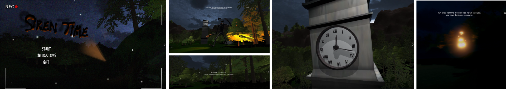

Siren Time (2022)
A short horror game where the user must evade the monster in the time given, or perish at its hand. Scored a high second (67%)
Made for my first year module 'Media Production For Interactive Environments', Siren Time was a leap into my first experience of Game Development and Design. Despite its amateruish charm, the short game has a strong grasp of design fundamentals: environment, narratology, atmosphere. systems and interactions. Its strengths lie in the audio engineering, animation and narrative design which all tailor towards the research and context put into the piece.
Skills Used
- Game Development, Envrionment Design, Interaction Design, Level Design, Lighting and Animation using Unity Game Engine
- 3D Modelling using Blender
- Project Managment and Iteration using GitHub